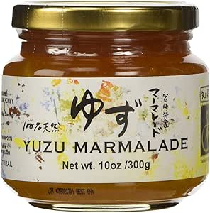

Yuzu Marmalade

Descripton
Yuzu is a delicious Japanese citrus fruit.
It is slightly sour with a touch of sweetness.
A very refreshing fruit, its perfect as a pick-me-up for breakfast.
Yuzu maramlade is best eaten morning lunch and dinner.
A jar of yuzu marmalade is paired well with a fresh loaf of french toast for a midnight study snack. Ok maybe not a entire jar of marmalade, but you almost could when this jam is so magically tasty.
We will not judge you.
Even if you are a bear.
Ingredients
- 7 small yuzu
- 1 large lemon
- 2 cups of water
- 5 cups of sugar
- 1/2 teasooon salted butter
- 1 package fruit pectin
Steps
- Mix yuzu peels, water, in a large saucepan and bring to a boil. Reduce heat to medium-low. Cover and simmer, stirring occasionally, for 20 minutes. Add yuzu juice. Cover and simmer for an additional 10 minutes.
-
Measure exactly 4 cups of the yuzu juice mixture into a separate pot. If you are a little short because yuzu juice is hard to extract in the first place, add water to make up for the amount that is missing.
-
Stir pectin into the pot and add butter to reduce foaming. Bring the mixture to a full rolling boil-one that does not stop bubbling when stirred. Stir constantly. Add sugar and return to a rolling boil while stirring constantly. Boil for exactly 1 minute. Remove from heat. Skim any and all foam off with a metal spoon.
- Place a rack in the bottom of a large stockpot and fill halfway with water. Bring to a boil and lower jars 2 inches apart into the boiling water using a holder. Pour in more boiling water to cover jars by at least 1 inch. Bring to a rolling boil, cover, and process for 10 minutes.
- Remove the jars from the stockpot and let rest, several inches apart, for 12 to 24 hours. Press the center of each lid with a finger to ensure the lid does not move up or down. Remove the rings for storage and store in a cool, dark area. May take up to 2 weeks to set.